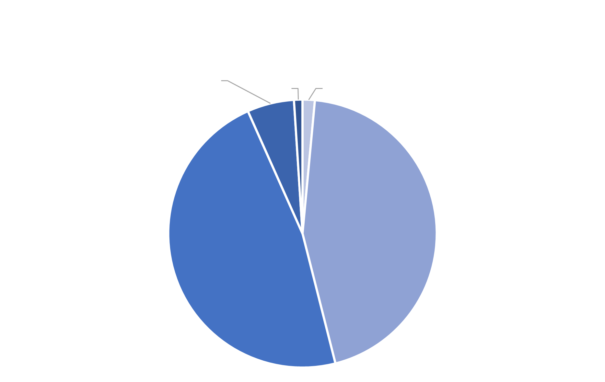
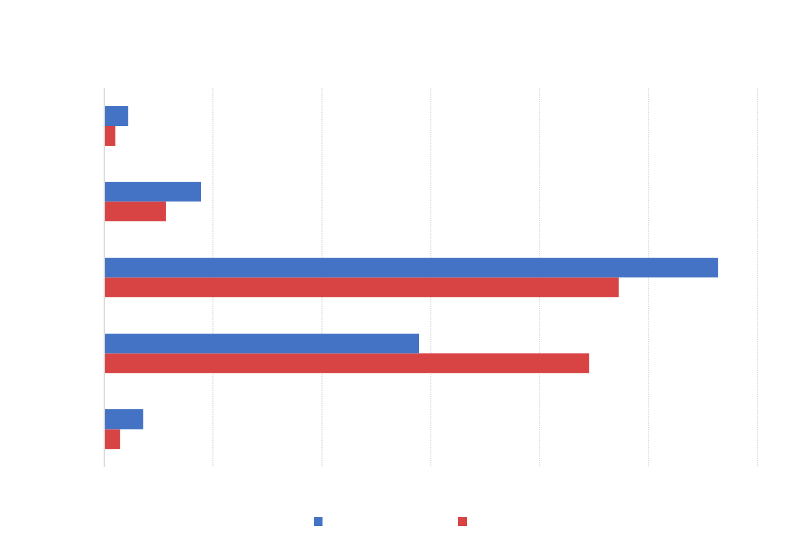
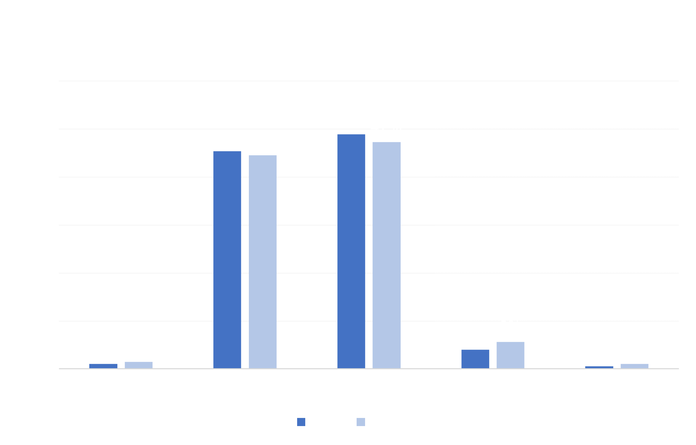

Bronx Analysis

In June 2020, Hispanic individuals made up the largest demographic group for arrests in the Bronx. Black is a close second at just 2% lower. A total of 1965 arrests were recorded in this time period within the borough.

The chart above compares each demographic group's overall proportion in the composition of the borough with the proportion of arrests on the demographic group within the borough. In the Bronx, Black individuals are disproportionately arrested in comparison to their overall population. Although they only make up 29% of the residential population in the Bronx, they make up 45% of the arrested population. The other demographic groups make up a smaller percentage of the arrested population than they do of the residential population.

In the year-to-year comparison above, the arrested population demographics only slightly changed from June 2019 to June 2020. Asian, Black, and Other arrest percentages remained similar, while the proportion of Hispanic arrests lowered in 2020. Meanwhile, the proportion of White arrests rose from 2019 to 2020.